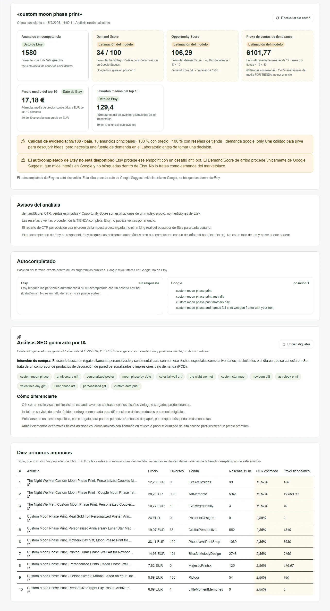
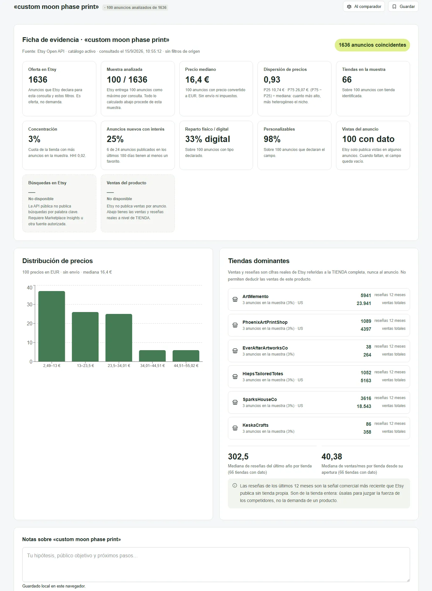
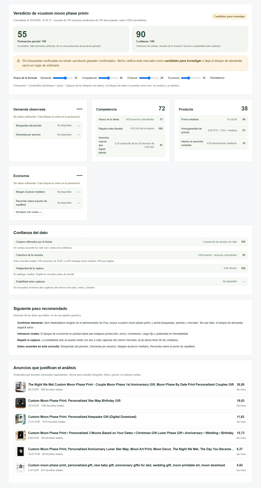
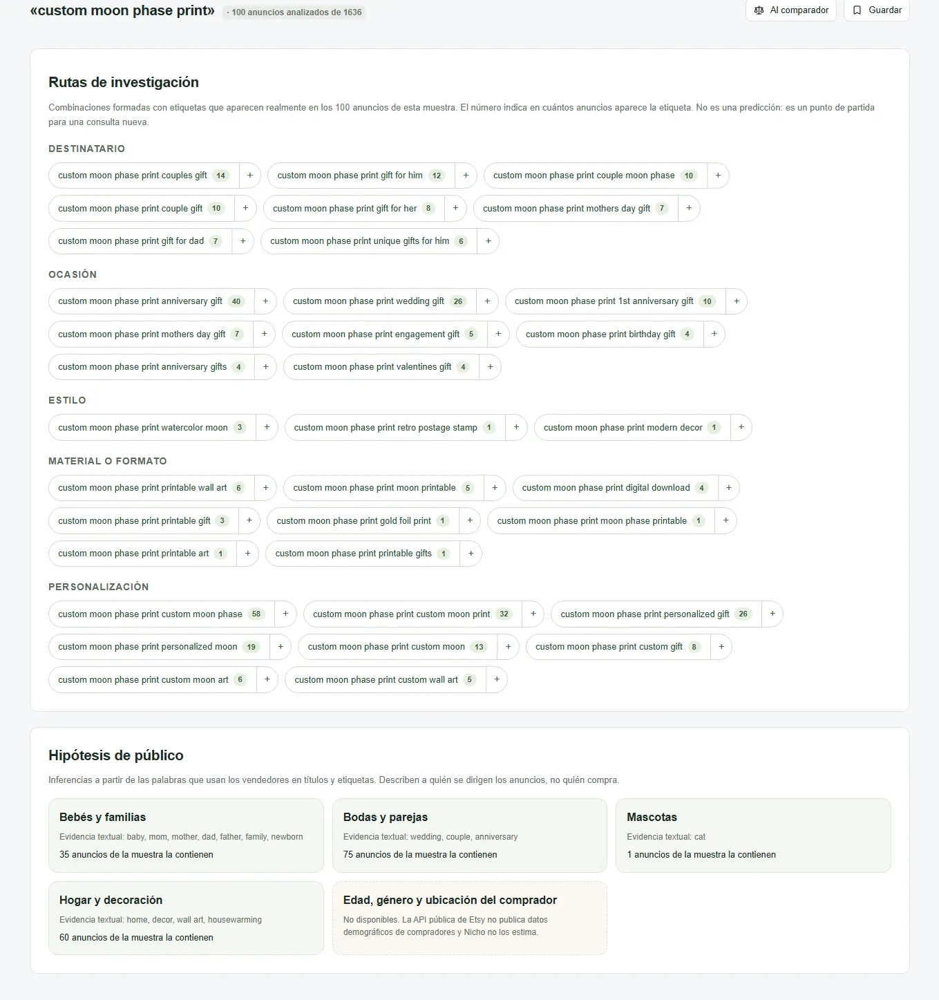

Herramienta a medida · IA aplicada · Investigación de mercado
Nicho
Una aplicación web que diseñé y construí para decidir qué producto crear en Etsy antes de gastar un euro en fabricarlo. Conecta seis fuentes de datos y una capa de IA, conserva el origen de cada cifra y convierte la investigación en un informe que justifica la decisión.
El problema: decidir a ciegas
Antes de crear un producto para Etsy hay que saber si alguien lo busca, cuánta competencia tiene, a qué precio se vende y si deja margen. Esa respuesta estaba repartida entre la API de Etsy, eRank, EverBee, Google Trends y una hoja de cálculo, y cada herramienta mide cosas distintas con nombres parecidos.
El riesgo no era tardar: era comparar un volumen de búsquedas con un recuento de anuncios y tomarlo como demanda. Por eso el encargo que me hice no fue «un dashboard», sino una herramienta que junte las fuentes sin mezclarlas.
Antes de Nicho
Cuatro fricciones del proceso manual
- Cinco pestañasCada consulta obligaba a saltar entre herramientas y copiar cifras a mano.
- Datos sin origenUna cifra copiada pierde de dónde salió, de qué fecha es y qué mide.
- Oferta confundida con demandaMuchos anuncios no significan muchas búsquedas. El error más caro del nicho.
- Decisiones sin rastroSemanas después nadie recordaba por qué se eligió un producto y no otro.
Qué conecté y cómo
Cada integración tiene un trabajo y un nivel de confianza distinto. La arquitectura se diseñó alrededor de esa diferencia: el servidor protege las claves y hace las llamadas, y la interfaz nunca presenta una estimación como si fuera una medición.
Fuentes
Núcleo
Nicho
Recoge, normaliza y etiqueta cada dato antes de calcular nada.
- Next.js y TypeScript, interfaz modular
- Rutas de servidor: las claves nunca llegan al navegador
- Cloudflare Workers con caché persistente en D1
- Importador CSV tolerante a formatos europeos
Resultado
Cada cifra viaja con su fuente, su fecha y su naturaleza
La IA propone. Los datos deciden.
Gemini hace lo que un modelo de lenguaje hace bien: interpretar la intención de una búsqueda, clasificar el tipo de producto, proponer etiquetas SEO y sugerir cómo diferenciar la oferta. Lo que no hace es inventar cifras. Si una fuente no publica un dato, Nicho escribe «No disponible» en lugar de rellenarlo.
Para que eso se vea en la interfaz, cada valor pertenece a una de cuatro categorías, y cada categoría tiene su propio tratamiento visual. Al modelo solo le llega la palabra clave y sus métricas principales, nunca el archivo completo del usuario.
Trazabilidad
Cuatro naturalezas del dato
La regla que ordena toda la aplicación.
Un campo desconocido nunca se convierte en cero

La herramienta por dentro
Capturas de la aplicación publicada con una consulta real: «custom moon phase print». Desliza dentro de cada ventana para recorrer la pantalla completa.



De una idea a una decisión documentada
Doce pasos en la aplicación, agrupados en cinco momentos. Cada uno deja rastro, así que la decisión final se puede defender semanas después.
- HipótesisUna idea, una palabra clave y un mercado.
- MercadoAnuncios reales de Etsy, oferta y competencia.
- DemandaCSV de eRank o EverBee y tendencia en Google.
- AnálisisGemini propone etiquetas y diferenciación; se compara.
- DecisiónMargen, embudo, veredicto e informe PDF.
Decisiones de ingeniería que no se ven
Una herramienta de datos se gana la confianza en los detalles. Estas son las reglas que fijé antes de programar las pantallas.
- Claves solo en el servidorLa credencial de Etsy vive en variables privadas y no aparece en el código descargable.
- Sin robar accesoseRank y EverBee entran por CSV exportado: Nicho no inicia sesión ni guarda contraseñas.
- Nada se inventaEl Sales Rank de Amazon no se traduce en ventas; un campo vacío se muestra como vacío.
- La IA ve lo mínimoA Gemini llega la palabra clave y sus métricas, no el archivo completo.
- Caché persistenteCloudflare D1 guarda resultados y evita repetir llamadas a las APIs.
- Datos del usuario en localEl espacio de trabajo se exporta e importa como JSON sin pasar por el servidor.
En uso, y automatizada con agentes
La primera investigación completa fue un nicho esotérico digital: palabras clave de eRank importadas, dieciséis informes PDF generados y un informe maestro con los productos priorizados y un complemento para impresión bajo demanda en Europa.
Después di un paso más: un flujo de agente con Claude que busca las palabras en eRank desde el navegador, construye el CSV, lo importa en Nicho, descarga los informes y redacta la síntesis. Nicho pasó de ser una aplicación a ser una pieza dentro de un sistema.
Etsy, eRank, Google Trends, Gemini, Amazon y Cloudflare, cada una en su sitio.
No es un SaaS genérico: responde a una pregunta de negocio precisa.
La uso donde aporta y la etiqueta donde podría confundir.